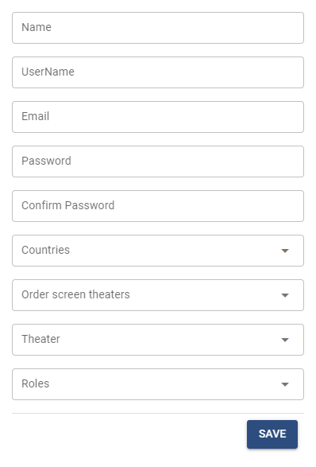
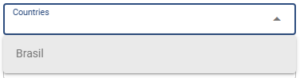
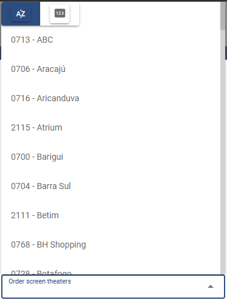
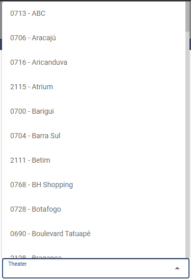
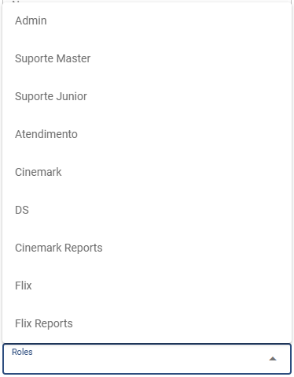

Criação dos usuários para acesso ao Communique. Todos os usuários receberão um e-mail automático com login e senha.

Name: Nome e sobrenome do usuário.
UserName: Nome de login do usuário.
Email: e-mail do usuário.
Password: Senha.
Confirm Password: Confirmação de senha. Deve ser igual a senha.
Countries: País que o usuário terá acesso.

Order Screen Theaters: AAA

Theater: Cinema do usuário. Essa função só será utilizada se o Role do usuário for GO.

Roles: Item que determina o nível do usuário dentro do sistema. Ele determinará as telas em que o usuário terá acesso e também o que ele poderá fazer dentro do Communique.

Permissions
Lista de Roles disponíveis no sistema. Eles são incluídos no sistema diretamente no bando de dados.